Strata multisig · Regtest tester kit
Payout Administrator walkthrough
What to do, what to compare and what the app refuses. Read in UI order with the seeded walkthrough stack.
1. Connect the node and Ledger
PRD 06 §2PRD 06 §3.bPRD 07 Config
Build and seed using Build and run. Use regtest only. This guide describes the real UI against the walkthrough bridge and Speculos. Use Physical Ledger tests for the separate hardware round. Do not connect a physical Ledger for screenshot work.
- Start your own regtest Bitcoin Core from the kit and the app through
run-desktop.sh, as Build and run describes. Open the node settings from the network pill at the top right, select Local node and set Orchestrator URL to the round's coordinator. Core needs-txindex=1. Core 28 or later supports the payout transactions' TRUC relay; the payout screen warns about older nodes. - Set Bridge parameters file (params.toml) and Signer roster (admin xpubs) to the seed output files. Use the same params on the coordinator. The roster contains each admin's label, fingerprint and account xpub in params order. Its
xpub/0/0must equal that position's admin key. A different key or network is refused. - The launcher sets
BITCOIN_NETWORK=regtestfor the app. Node settings persist innode-config.json; they do not select the network. Payouts require neither Strata/ASM nor Electrum. - Connect your Ledger with Bitcoin Test open. Select Payout Administrator in the multisig selection flow. At Payout Administrator sign-in, click Connect Ledger.
The app checks the open app and version, fingerprint and account xpub. It supports Ledger with Bitcoin Test 2.4.6 or later on regtest. Trezor and BitBox are not supported. A closed app gives Open the Bitcoin Test app on your Ledger. A wrong app gives The {name} app is open on your Ledger; open the Bitcoin Test app. An old version gives Update the Bitcoin Test app on your Ledger to 2.4.6 or later in Ledger Live (installed: {version}).
Unreadable files produce Could not read the bridge parameters file {params_path}: {e} or Could not read the signer roster file {p}: {e}. After authentication, differing deployments produce The coordinator uses a different params.toml than this app. Check the bridge parameters file in Node settings before signing.
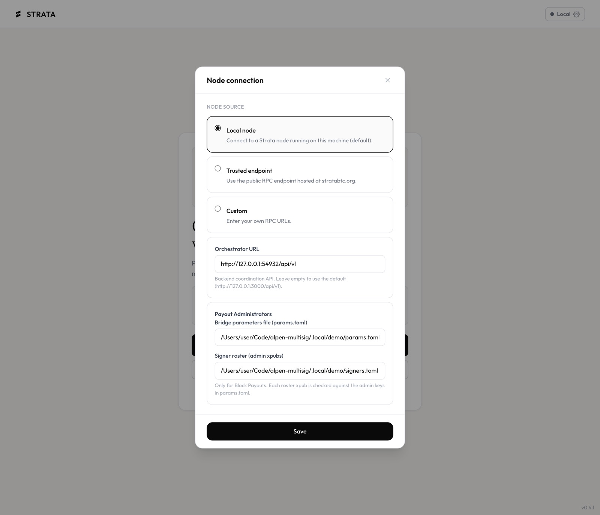
2. Admin ID and verification tools
PRD 06 §3.b.iiPRD 06 §3.c.iPRD 06 §4.a
The payout identity is the BIP-86 P2TR key at m/86'/coin'/73'/0/0. Regtest uses coin 1, so the path is m/86'/1'/73'/0/0. It authenticates the admin and signs claim inputs. The Admin Wallet uses the same account with receive/change branches and address indexes.
3. Sign the challenge
PRD 06 §3.cPRD 06 §3.b.iv
After Connect Ledger, read the checklist. Click Sign in on Ledger only when ready to compare the device. Both 2.4.x and 2.5+ show Review message, Path 86'/1'/73'/0/0, the paged message, then Sign message. The actual message is:
Strata Session Authentication v1 | Role: payout_admin | Challenge: {challenge_hex}
Compare the complete challenge with the app, not just the role. While signing, the button says Confirm on your Ledger…. Reject a mismatch. Successful signing opens Block Payouts with the admin label, quorum, regtest and Ledger app version.
A device outside the local roster is refused with This Ledger is not one of the Payout Administrators in params.toml. A signature recovered to another key gives The device signed with a key that is not this admin's params.toml key. The coordinator refuses invalid signatures, expired/consumed challenges and non-members with unauthorized. It does not distinguish invalid signature from non-membership in that response. This falls short of the specific sign-in errors suggested by PRD 06 §3.c.iii–iv.
The app rereads the version before reviews and signing. A changed version produces The Ledger now runs {name} {version}, not {old_name} {old_version} as when you signed in. Sign in again so the list of screens matches this device.
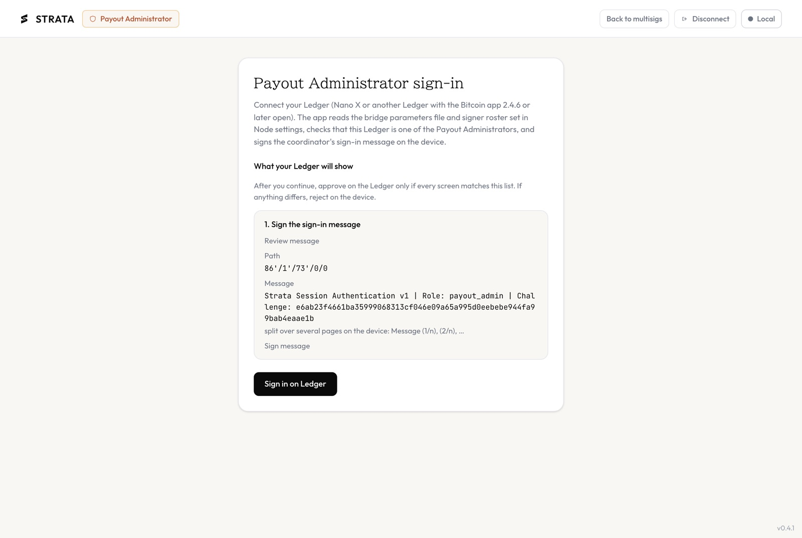
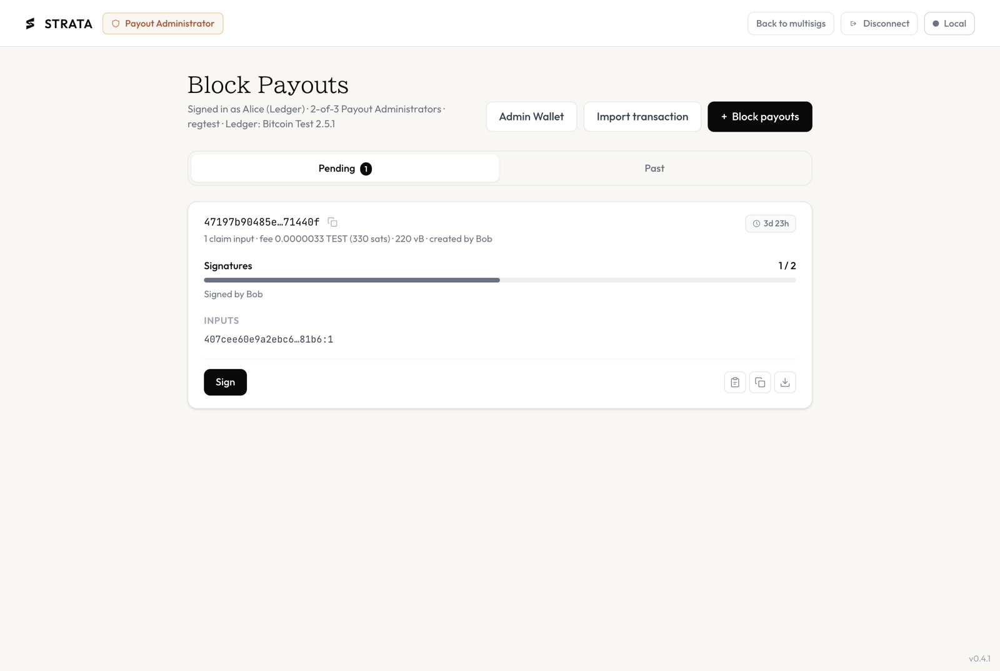
4. Import and verify false claim reports
PRD 06 §6.d.iPRD 07 False claim reports
Click Block payouts. In Block payouts: false claim reports, paste JSON or use Load from file (.json or .txt), then Next. One object, an array, or successive JSON objects are accepted. Empty text disables Next. Use real txids from the seed's reports.json:
{
"type": "strata-false-claim-report", "version": 1, "network": "regtest",
"createdAt": "2026-11-16T12:00:00Z",
"operatorPubkey": "<32-byte x-only key hex>",
"newClaimTxid": "<claim to block>", "newContestTxid": "<its contest>",
"ackedClaimTxid": "<earlier claim>", "ackedContestTxid": "<its contest>",
"counterproofAckTxid": "<earlier game's ACK>"
}
The last six fields are required. Type, version, network and createdAt are optional. Type/version/network are checked when present; createdAt is only parsed as a string, not validated as a date. PRD 07 describes the proof relationship and possible inputs; the concrete JSON schema above is the branch's contract.
The app fetches all five transactions from your node. All must be mined and the ACK must have at least six confirmations. Each contest must spend its claim's output 0 via a committed contest leaf with a trusted params covenant N/N key. The ACK spends the earlier contest's payout connector but not its proof connector; it must have version 3, locktime 0, two inputs, one taproot output and the covenant's timeout leaf. Both claims' CPFP outputs must pay the named operator key. The new output 1 must match this deployment's admin connector and amount. The counterproof transaction is not fetched.
This implements PRD 07's same-operator check using claim CPFP outputs plus authenticated contest spends. It does not offer PRD 07's proposed deposit-index search/input or derive all transactions from a claim txid alone.
Review transactions and fee shows the valid and ignored counts. Expand Ignored reports for reasons. Only valid reports enter the plan. Duplicate reports for one connector merge, with the first valid proof winning. Already confirmed-spent connectors, including paid claims, show already spent in this UI. Mempool conflicts do not classify a connector as confirmed-spent.
oldClaimTxid, oldContestTxid, oldCounterproofTxid and oldCounterproofAckTxid are unknown fields. Current version: 1 with acked* fields is accepted. Version 2 is refused. Do not rename fields blindly: the named transactions must prove the required graph.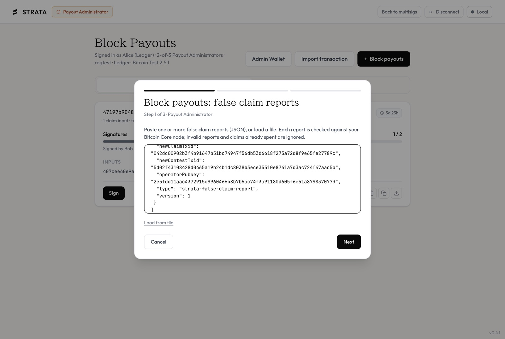
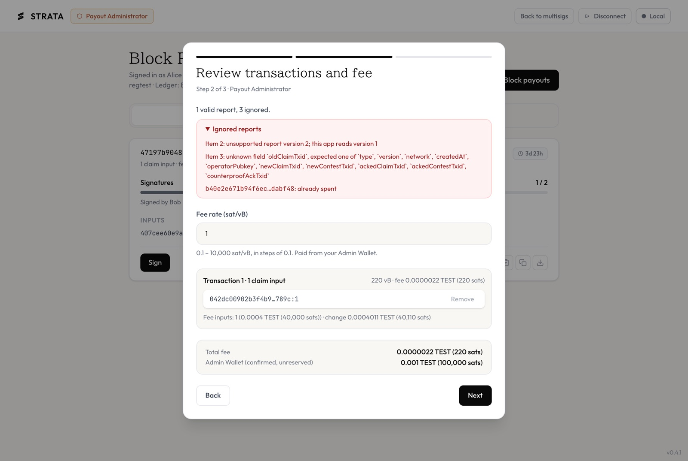
5. Report rejection reference
PRD 06 §6.d.i
These are the application-defined texts from report.rs. Braces below stand for actual node values. {which} is new or acked; transaction {name} is new claim, new contest, acked claim, acked contest or ack. Verification stops at the first failed check for each report.
The parser refuses a whole non-JSON paste, more than 4,000,000 bytes or more than 10,000 items. Valid JSON items with missing/unknown fields, invalid types, malformed pubkeys or txids receive serde's detailed parser error, prefixed in the UI by Item {one-based position}: . For example, an obsolete field produces unknown field `oldClaimTxid`, expected one of ... with the actual allowed-field list. Node RPC/transport failures surface their underlying error and may stop verification as a whole.
Every application-defined report rejection
the pasted text is too largemore than 10000 reports in one pastenothing to read: paste one or more false claim reports in JSONthe pasted text is not JSON: {parser detail}unsupported report version {v}; this app reads version 1type must be "strata-false-claim-report", got "{t}"unknown network "{n}"report is for {parsed}, this app is on regtestthe new claim and the acked claim are the same transactionYour Bitcoin node does not know the {name} transaction {txid} (it needs txindex=1).The node returned a different transaction for the {name}.The {name} transaction {txid} is not mined yet.The ack transaction {txid} has {confirmations} of the 6 confirmations required. Paste the report again later.The {which} contest does not spend output 0 of the {which} claim.The {which} claim has no output 0.Output 0 of the {which} claim is not a taproot output.Output 0 of the {which} claim has an invalid taproot key.The {which} contest does not spend the claim-contest connector through a leaf.The {which} contest uses an unknown leaf version.The {which} contest's leaf is not committed to the {which} claim's output 0.The {which} contest did not spend the claim through a contest leaf (N/N + watchtower).The {which} claim's contest connector uses N/N key {n_of_n}, which is not derived from the trusted params.toml.The ack does not spend the acked contest's payout connector, so it is not an ACK.The ack also spends the acked contest's proof connector, so it is the bridge proof timeout, not an ACK.The ack does not have the shape of a counterproof ack (version 3, locktime 0, two inputs, one taproot output), so it is not an ACK.The ack does not reveal the timeout leaf of N/N key {key}, so the covenant did not sign it.The {name} claim's CPFP output is not locked to operator key {key}.The new claim has no output 1.Output 1 of the new claim is not the admin payout connector of its N/N key and this admin set.The new claim's admin payout connector holds {actual} instead of {expected}.The claim's admin payout connector is already spent in a confirmed transaction.
The final spent-connector sentence is the core reason; the UI shortens it to already spent. For an ACK with one to five confirmations, wait for the sixth and paste again. A mempool ACK instead fails the earlier “not mined yet” check. Seeded default reports already have six or more confirmations.
6. Choose inputs and fees
PRD 06 §6.d.ii–vi
All valid reports start selected. Use Remove to deselect individual claim inputs. The app bundles inputs into transactions accounting for fee coins and one change output. After removal it preserves the groups instead of moving remaining claims between transactions. Each card shows its claim count, outpoints, size, fee, fee-input count/value and change. In Pending warns that another pending transaction already uses the claim; remove it unless that payout is abandoned.
Enter Fee rate (sat/vB), from 0.1 to 10,000 in steps of 0.1. The payout flow starts at 1 sat/vB. Its total is Total fee, and Admin Wallet (confirmed, unreserved) shows the fee funds available. Fee coins come from the creating admin's wallet, not another admin's. Reserved coins and unconfirmed change are unavailable. Change returns to the first unused Admin Wallet change address.
Invalid fee input shows Enter a fee rate in sat/vB with at most one decimal (e.g. 2.5). or The fee rate must be between 0.1 and 10,000 sat/vB. Critical plan errors include Admin Wallet has insufficient funds to pay this transaction fee. and Your transaction exceeds the size limit, please remove one or more inputs to reduce its size. No valid inputs, invalid rates or critical errors prevent continuing. TRUC limits each transaction to 10,000 vB; 2-of-3 supports up to 90 claims under the tested coin shape, then splits.
Click Next to reach Confirm and sign. Check transaction count, claim count, fee rate, total fee, Fee source: Admin Wallet and change. Confirm stays disabled until the Ledger checklist has loaded. Back allows changes, which invalidate the prior review.
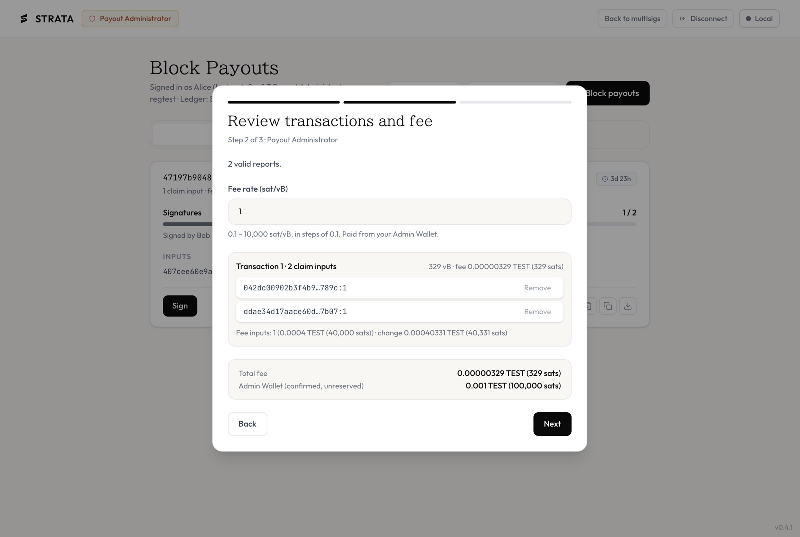
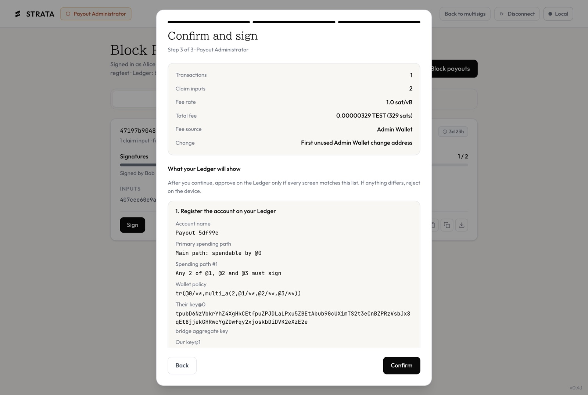
7. Check every Ledger screen and sign
PRD 06 §3.b.ivPRD 06 §6.d.vi
The checklist says: After you continue, approve on the Ledger only if every screen matches this list. If anything differs, reject on the device.
It is built from the message or transactions being signed and your app version. It names key owners and the change recipient. Regtest addresses appear as bcrt1… in the UI; the Ledger may show the corresponding tb1… address, which the checklist also gives. Amounts on Bitcoin Test use TEST, with satoshis in the checklist.
| Pass | Bitcoin Test 2.4.x | Bitcoin Test 2.5+ |
|---|---|---|
| First registration per covenant | Review account to register; Account name Payout <id>; Wallet policy; Review co-signer public keys; Their key@0 (bridge); Our key@i / Their key@j; Register account. | Also Primary spending path: Main path: spendable by @0 and Spending path #1: Any k of @1, @2 and @3 must sign, before the policy. |
| Claim signing | Security risk: There are external inputs; Continue anyway; Review transaction; From Payout <id>; Amount; To; Fees; Sign transaction. | From account; Amount; To; External amounts (fee inputs and other covenants); You spend (this covenant's claims); Fees. |
| Fee signing, creator only | External-input warning; Continue anyway; Amount 0 TEST (self-transfer); Fees. | Warning; External amounts (claims); You spend or You receive (fee coins minus change); Fees. |
Registration shows tr(@0/**,multi_a(k,@1/**,…,@n/**)) and the roster xpubs. It occurs only if that device has not registered this covenant wallet; the app checks its address 0 against the connector before accepting registration. Multiple covenants require a claim pass per covenant, each preceded by registration if needed, then the creator's fee pass. The expected external-input warning reflects separate signing passes. Fees are the whole transaction fee in every pass.
The spec records blank Amount/To/Fees values in the 2.4.6 emulator image, while the physical Nano X shows the values. Treat this as a capture limitation. A blank value on a physical device means reject. A version newer than verified versions carries a checklist warning.
Click Confirm and approve every matching device screen. The app rebuilds the reviewed transaction and checks claim connectors again. If it changes, it refuses with The transaction changed since the preview; review it again. Successful signatures are stored in Pending. If quorum is already reached, the app broadcasts immediately. A multi-transaction batch is not atomic: earlier completed transactions can remain stored if a later signing fails.
At 15 or more claims in one transaction, expect Keep your Ledger awake: expected waiting time {minutes} {unit} and Solutions: (1) Press the Ledger's buttons every half minute or so. (2) Increase the lock time on the Ledger: Settings → Security → PIN lock. Loading and signing count as inactivity. A lock ends the signing attempt.
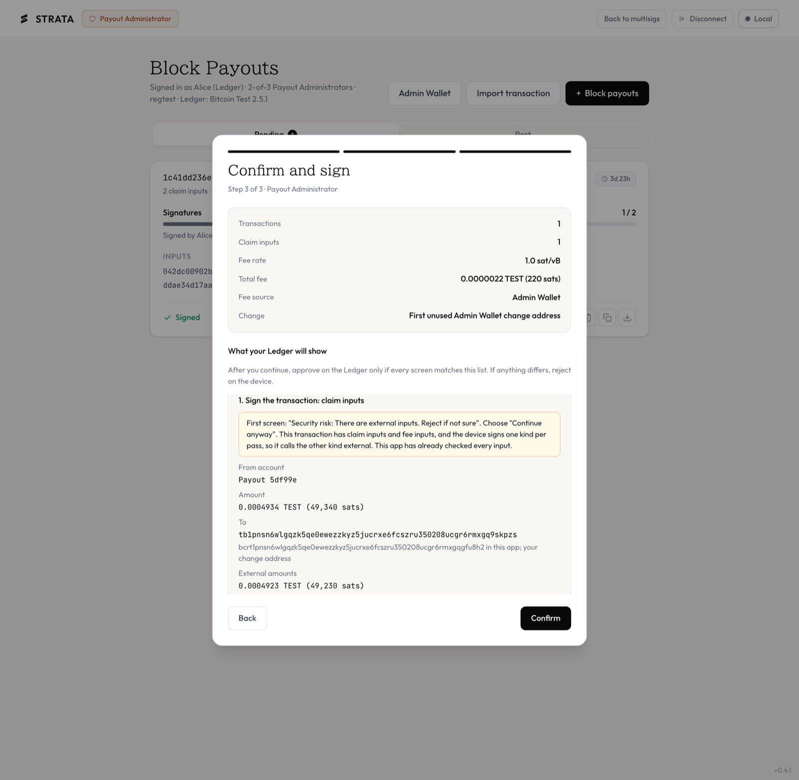
8. Pending payouts and signature exchange
PRD 06 §6.b
Pending cards show transaction ID (copy button), claim count and outpoints, fee, vsize, creator, expiry countdown, signature progress and Signed by labels. Your signed cards show a checkmark and Signed; others offer Sign. Lists refresh every 15 seconds and use pagination when needed.
For another admin's payout, click Sign. Sign transaction shows the transaction ID, Ledger wallet name, claim inputs, fee, creator's change address and remaining signatures. Review the checklist and click Sign. The app checks each input's existence, amount, script and unspent state on your node, fee bounds, transaction ID and an admin-owned change output before signing. A spent input gives Input {outpoint} is already spent. Nothing was signed. Do not approve an unexplained change recipient.
Use Copy all signatures and Paste signatures to exchange lines txid:input:xonly:sig64. Paste one per line and click Import. Valid signatures are added; invalid ones are omitted and listed below Warning: Invalid signature. Please provide a valid signature. or Warning: Invalid signatures. Please provide valid signatures. Use Copy error for the entire warning. Existing signatures do not count twice.
Export transaction with signatures copies a base64 PSBT. Import transaction accepts that exported PSBT, validates it against params.toml, and adds it to Pending or merges its signatures. It is not a raw-transaction-hex import. A malformed or foreign-deployment PSBT is refused. The last valid signature triggers automatic broadcast.
A fully signed card still in Pending shows Fully signed, but not broadcast yet. and Broadcast. A node failure shows Broadcast failed: {node error} and Retry broadcast. Correct the node/fee/conflict cause and retry; the app keeps the signed payout. A fee increase on the payout itself is not supported.
Shared inputs display an information icon with This input is included in multiple Pending transactions. To prevent double-spending, only one of these transactions can be confirmed. The list also warns Some pending transactions share inputs. See the ⓘ icons for details. Duplicates are allowed, not silently removed.
A pending payout expires four days after its first signature, or once a competing spend confirms. An unsigned import starts its four-day clock on storage. Mempool conflicts alone do not expire it. Expired entries disappear; the coordinator remembers the expired txid so reimport cannot restart the clock. Recreate from still-valid reports to get a new change address and txid. Once broadcast, it is Past and the pending expiry clock no longer applies.
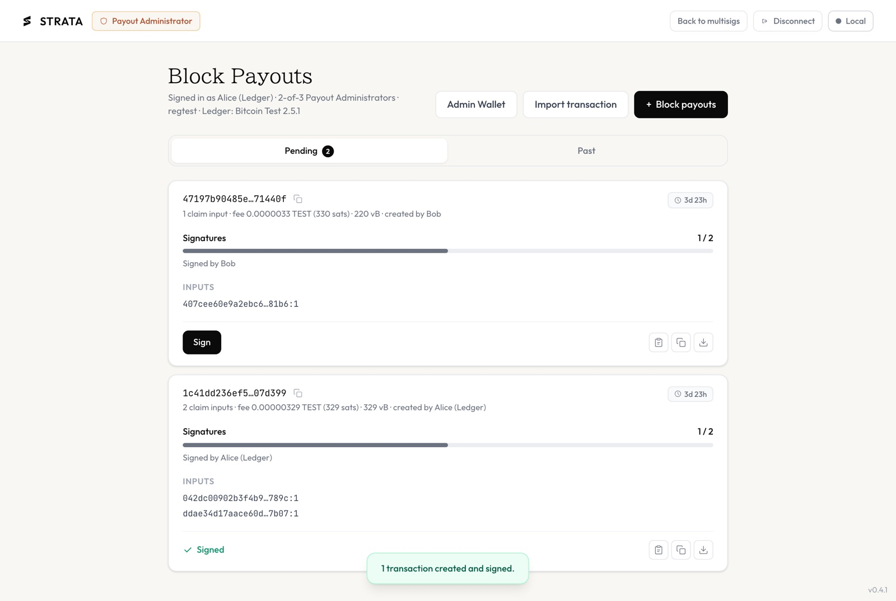
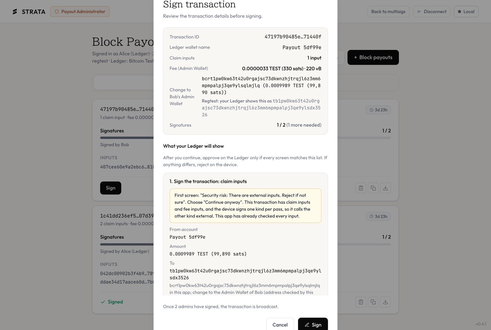
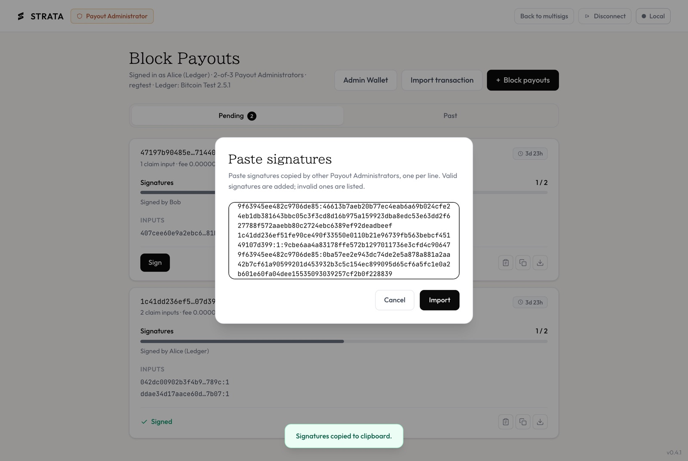
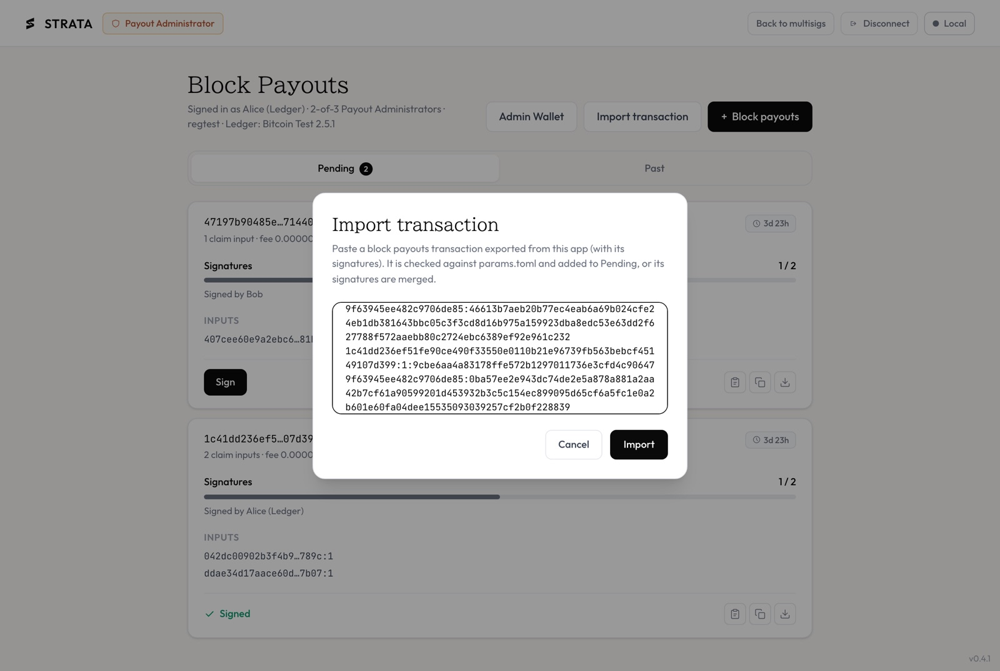
9. Past payouts
PRD 05 §6.cPRD 06 §6.c
After quorum and accepted broadcast, open Past. The transaction starts Unconfirmed, with a sent timestamp and txid. Rebroadcast resubmits the recorded transaction through your node. Copy transaction with signatures copies raw signed transaction hex for a separate broadcaster. Neither action creates a fee bump. When a block confirms it, the row becomes Confirmed and shows the block timestamp; unconfirmed-only actions disappear. A payout completed outside the coordinator can be reconciled here on refresh.
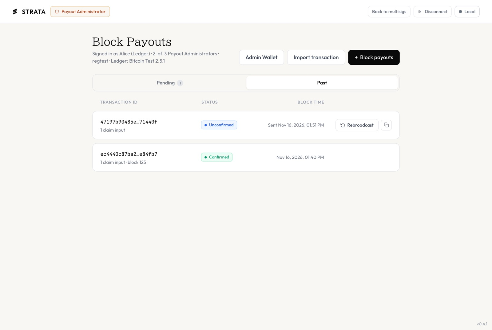
10. Admin Wallet balance and receive
PRD 06 §4.b.i–iv
Click Admin Wallet. Balance is net of this app's own unconfirmed sends. Unconfirmed appears when the net own-send effect is nonzero. Available includes only currently spendable confirmed funds. Pending-payout fee inputs and coins being sent are held out of Available. Addresses with balance lists per-address amounts, including own unconfirmed change, which is not spendable yet.
Coins marks held coins · in a pending payout or · being sent. Empty wallets say No confirmed coins. Send some to the address above. Incoming unconfirmed funds are not shown. The node scans confirmed UTXOs, not an Electrum wallet or incoming mempool history.
Receive shows the first unused receive address as text and QR. Click either to copy it. Click Show on Ledger, compare the listed regtest/device address forms and approve. A successful comparison says The Ledger shows the same address. A stale or mismatched response can show The Ledger address does not match the current receive address. It is not a successful verification. After a receive confirms, the dialog detects the new tip on its 15-second polling cycle, refreshes and rotates the address. Use Refresh to reread manually. Funds seen and remembered at an address prevent later reuse.
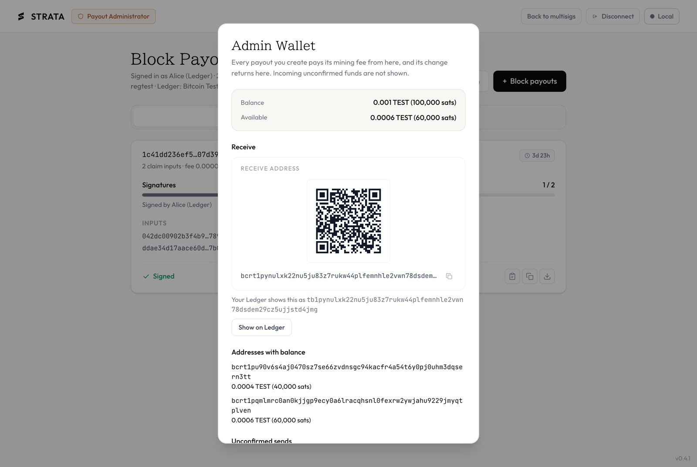
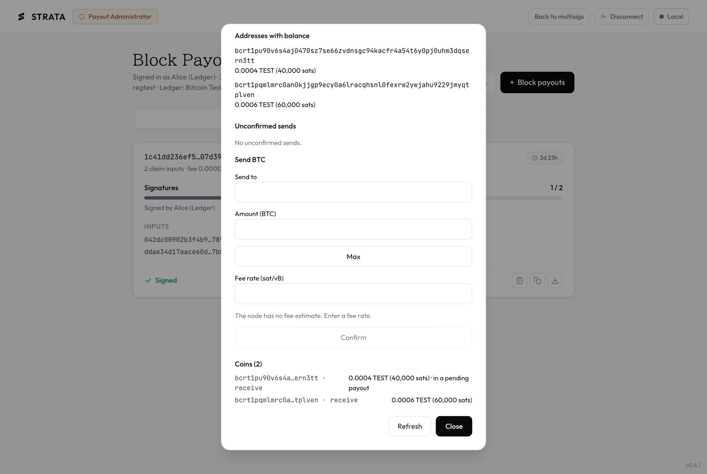
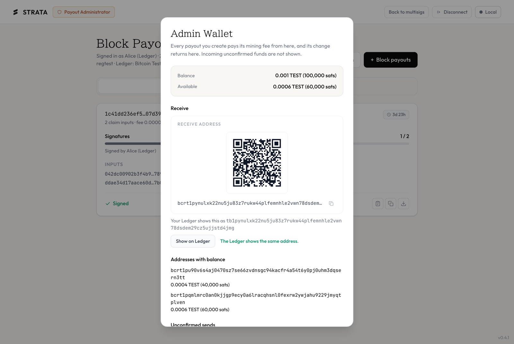
11. Send from the Admin Wallet
PRD 06 §4.b.v
- In Admin Wallet, scroll to Send BTC. Enter a regtest destination in Send to. Supported address types are P2PKH, P2SH, P2WPKH, P2WSH and P2TR. Raw P2PK has no address format and is not accepted.
- Enter a positive Amount (BTC) with at most eight decimal places, or click Max. Max calculates the available amount after fees and makes the amount read-only; Enter amount switches back.
- Set Fee rate (sat/vB) between 0.1 and 10,000 in 0.1 steps. The initial value is the node's next-block estimate when available. On a fresh regtest node expect
The node has no fee estimate. Enter a fee rate.and enter one manually. - Confirm starts disabled. It enables only after valid fields pass backend validation. Click it to show Recipient, Amount, Fee, Change and the Ledger checklist. Editing a field invalidates this review.
- Click Confirm on Ledger. On 2.4.x and 2.5+ compare Amount, To and Fees, then approve. The app broadcasts through Core and shows Transaction sent, txid and Copy transaction ID.
Exact destination errors are Destination must be a bitcoin address. and, on regtest, Destination must be a testnet bitcoin address. The latter wording covers regtest even though a testnet bech32 address is not necessarily a regtest destination. The mainnet variant is Destination must be a mainnet bitcoin address. Too much value including fees gives Insufficient funds; below-dust sends give Recipient amount is below the dust limit. Invalid/empty amount or rate keeps Confirm disabled.
Change uses the first unused change address. A remainder below 330 sat is added to the fee. Sends use confirmed, unreserved coins and never spend own unconfirmed change. The app rebuilds before signing; a changed transaction gives The transaction changed since you reviewed it. Review it again. A device refusal returned as rejected leaves the review unchanged with no visible error and no broadcast. Try again or use Back. Other failures remain visible and require a new review.
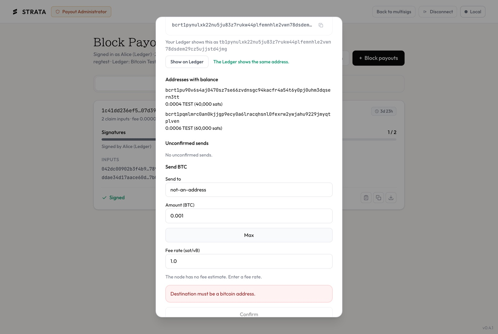
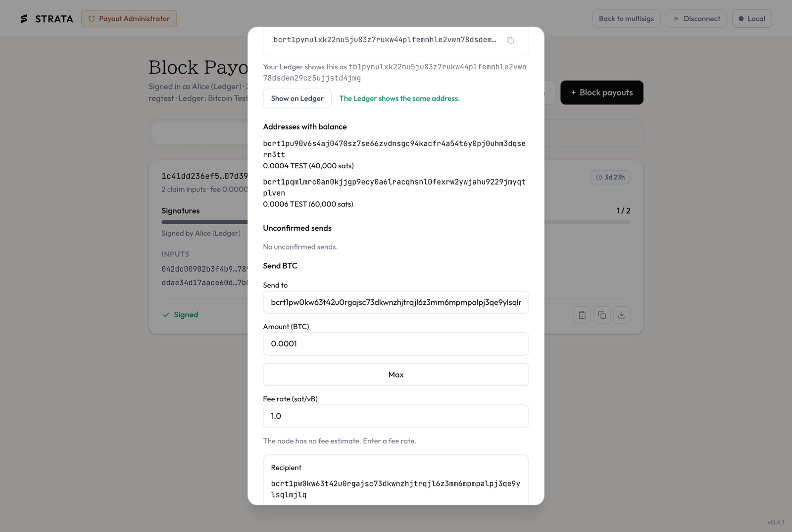
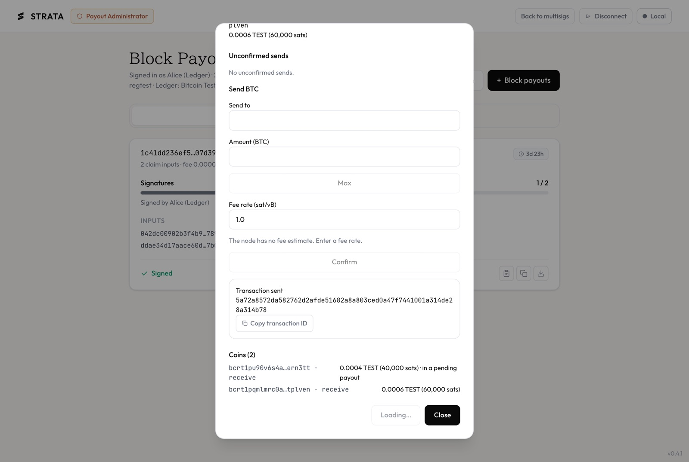
12. Own unconfirmed sends and fee bump
PRD 06 §4.b.iii
Unconfirmed sends lists own sends newest first with txid, destination, amount, fee rate and time. An empty list says No unconfirmed sends. If the node no longer has a recorded transaction while its inputs remain unspent, the row says The node no longer has this transaction. These records are local to this app, not a complete wallet transaction history.
Click Bump fee on an own unconfirmed send and enter a higher fee rate. Confirm reviews a replacement, then Confirm on Ledger signs it. A normal send retains recipient and amount, reduces change and can add confirmed coins if needed. A Max send reduces the recipient amount instead; inspect that new amount. The new absolute fee must also pay for any evicted descendants. Errors identify the minimum, including The new fee must be at least {sats} sat and the new fee rate must be higher than {rate} sat/vB. or The new fee rate must be at least {rate} sat/vB to pay for the evicted descendants.
The replacement is recorded only after Core accepts it. Rejection leaves the prior send intact. After mining, refresh removes confirmed sends from this list. There is no fee bump control for Block Payouts transactions.
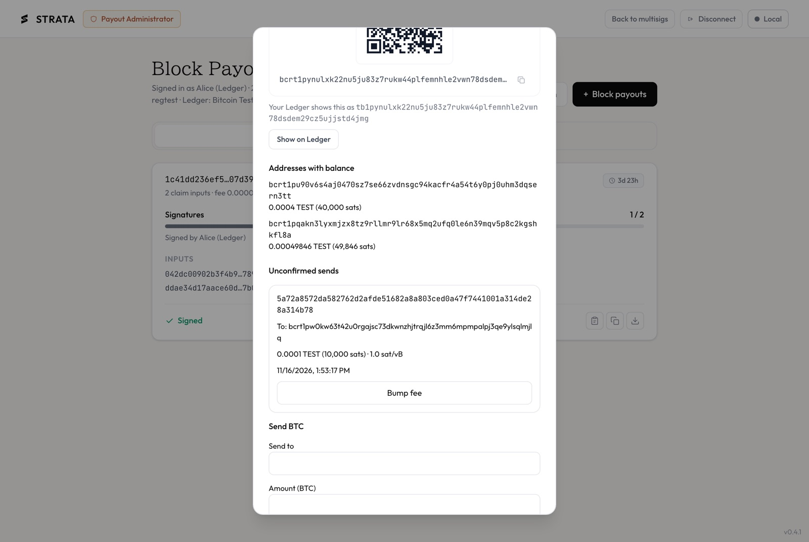
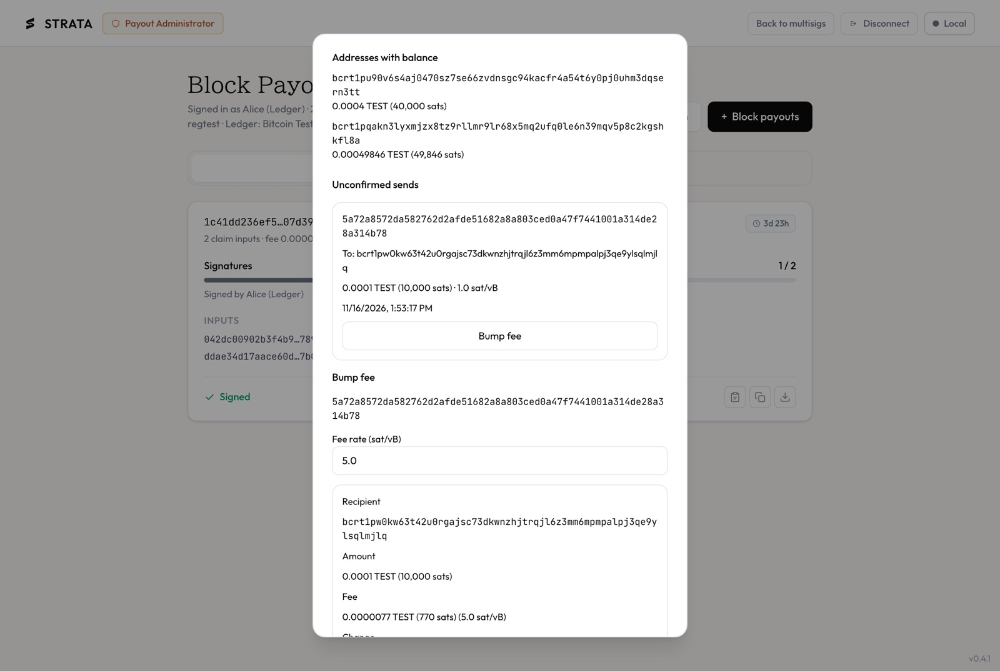
13. Sign out and go back
PRD 06 §3.d–e
Close exits Admin Wallet. Back to multisigs signs out of the payout session and returns to selection with the Ledger connection retained. The header Disconnect control signs out, disconnects the session and returns to wallet connection. Neither navigation action proceeds during an active device operation. Pending transactions remain with the coordinator; signing out does not cancel them.
Known deviations and limits
PRD 06 §3–4PRD 06 §6PRD 07 Config
- D1. Only a confirmed competing spend expires a pending payout. A mempool conflict does not.
- D2. Pending payouts may share inputs. The first to confirm wins; the others expire.
- D3. A non-JSON paste fails as a whole. Malformed items within valid JSON are individually ignored.
- D4. Unused addresses are inferred from current coins, pending/past payouts and locally remembered use. A receive and spend that the app never observed can be missed.
- D5. No payout Admin ID display, Verify, certificate generation/copy or identity view-on-device. PRD 06 §3.c.i and §4.a are not implemented for this role.
- D6. No fee bump of payout transactions. Rebuild a stale-fee payout and gather signatures again. Own ordinary wallet sends do support RBF.
- D7. Payouts use version 3 TRUC with 10,000 vB, not version 2 with the larger general standardness limit. Large batches split.
- D8. The Admin Wallet uses Bitcoin Core scans. No Electrum is needed. Pending-payout reservations and sends share coin holds, including persisted holds.
- D9. Incoming unconfirmed funds are absent. Only own recorded unconfirmed sends and their change are reflected. PRD 06 §4.b.i–ii is partial.
- D10. Four days means broadcast within four days, not confirmed within four days. Unsigned imports expire four days after storage. Past payouts no longer expire by this clock.
- D11. No P2PK destination, because P2PK has no address format. All five address-based destination types are supported.
Additional PRD gaps: supported hardware is Ledger only, rather than the wider compatible HWI device set; the coordinator's sign-in failures are generic unauthorized; PRD 07's proposed claim-only input and deposit-index search are not UI features. Its signet example is not this round's configuration. Use the seeded regtest params and roster.
Branch/spec distinctions: the code accepts current schema version 1 and refuses obsolete draft fields; createdAt is not date-validated; spent-report reasons display as “already spent”; payout creation defaults to 1 sat/vB while wallet sending requests the node estimate. Older audit notes calling the button “Fee wallet” or saying wallet send/bump exist only on governance screens are stale: this branch has Admin Wallet with both send and bump.
Operational limits: ACK reorganizations deeper than six blocks are not handled. Confirmed-coin scans can be slow; payout previews cache scans for 60 seconds and Confirm rescans. A damaged local wallet-send store stops wallet commands and is left untouched. Address lookahead is bounded; this is not a general wallet recovery tool.
Out of scope for this round: every governance role, mainnet/signet/testnet, non-Ledger devices, production deployment, Postgres durability qualification, reproducible-build verification and physical-device execution in the walkthrough. This document is a code-reviewed tester guide, not a claim that these scenarios were executed. The screenshots were taken on 2026-11-16 from the real UI against regtest, the coordinator and an emulated Nano X with Bitcoin Test 2.5.1; your values differ. Physical tests belong in ledger-tests.html.